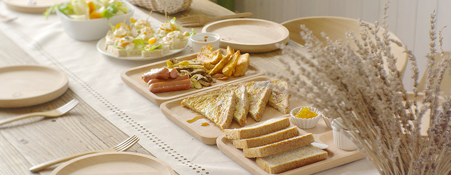

2016年05月10日
領航城市之光，為竹北加冕
建臺博館群各建築是本次「解構：李乾朗手繪臺博建築特展」的主角，在李教授的手繪中，它同時來表達創作者對這些歷史建築的歷史性、空間性和文化性的表達和詮釋，展覽中的建築畫，強調了「臺博館本館」和「鐵道部」的建築細節的美學藝術和高水準的建築工藝；南門的「小白宮」則利用了清代臺北府城牆的砌石建造的延展的歷史脈絡，而「土銀展示館」則表現了現代建築中殖民主義下的折衷主義、風格及異國情調。這些建築同時也反映了臺灣在該時期從清朝到日據時期，由農業到工商社會、工業初期社會的材料、工藝、及美學風格上的轉變，及其在「臺北城」到日據「三市街」時期城市空間的變遷和都市形式的轉變。